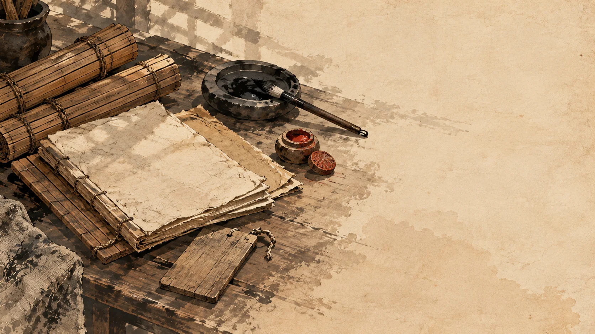
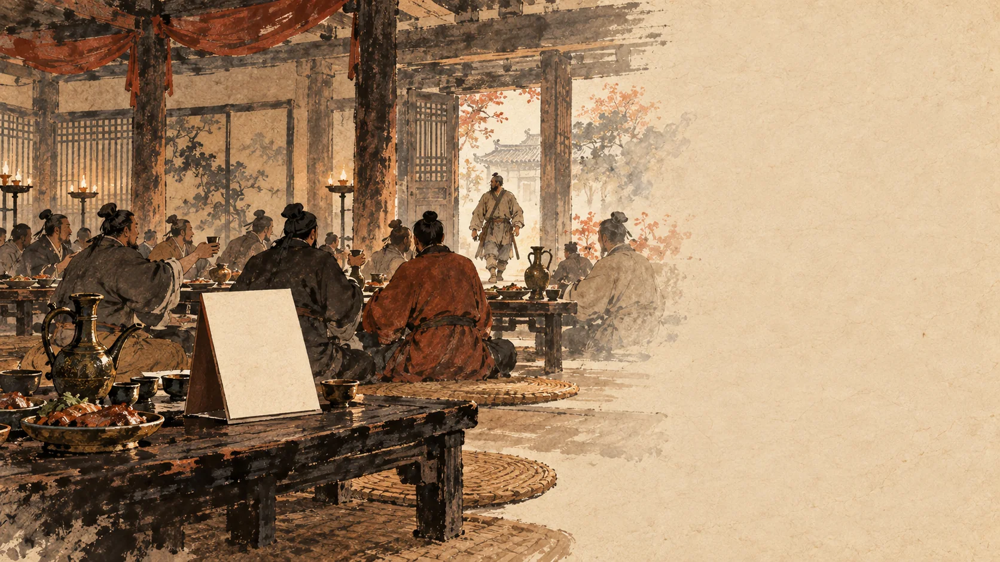
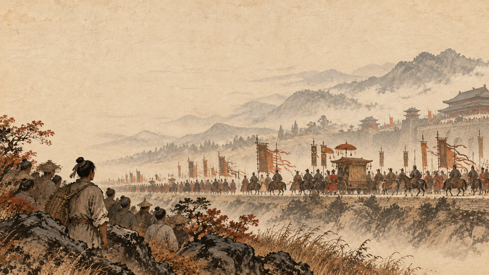
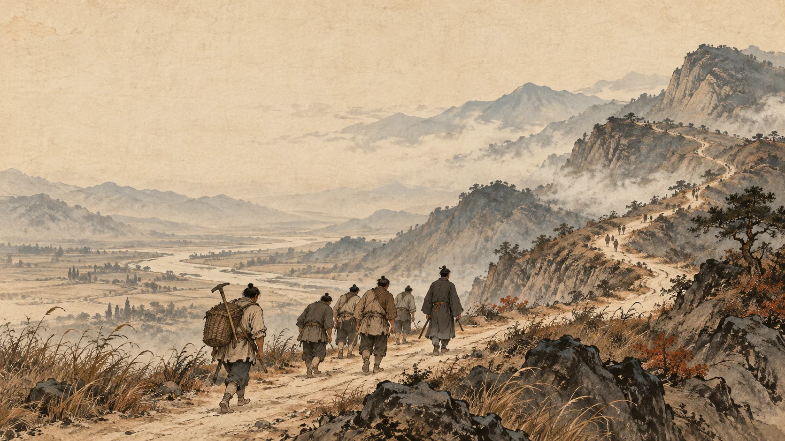
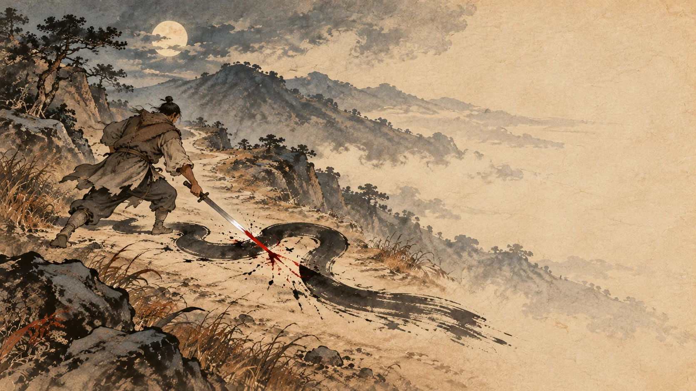
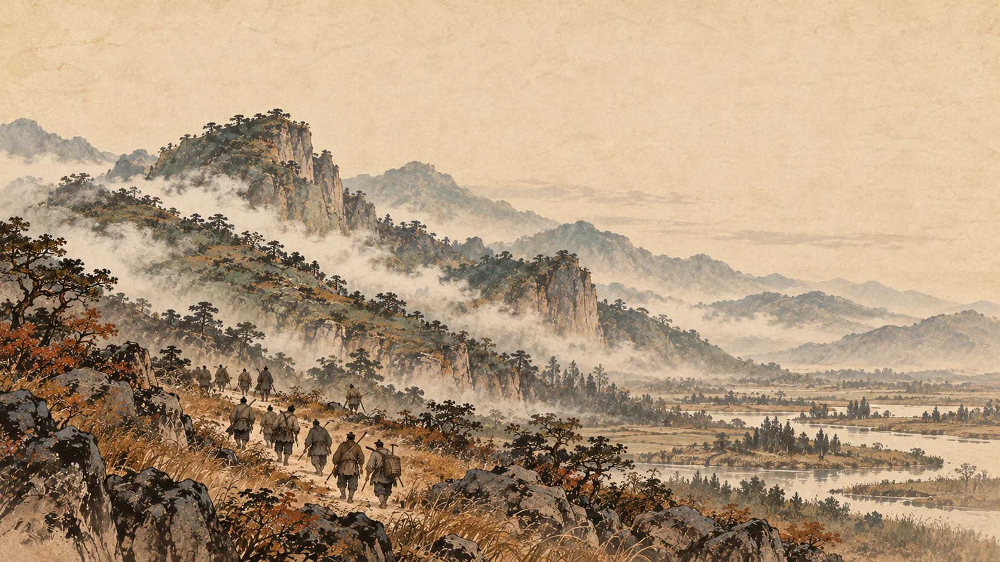

骊山路上：那批人一个接一个地不见了
一、先看一份档案

我们从一份档案开始。
| 姓名 | 刘邦（原名刘季） |
| 性别 | 男 |
| 籍贯 | 沛县丰邑中阳里 |
| 学历 | 无。没进过学，没考过试 |
| 职业 | 泗水亭长 |
| 家庭出身 | 农民 |
| 生卒 | 前256—前195 |
| 长相 | 高鼻梁，额头隆起，漂亮的胡子，左边大腿上有七十二颗黑痣 ① |
| 爱好 | 酒，女人 |
| 常去的地方 | 王媪、武负两家酒铺——都是赊账 |
| 同事对他的评语 | 刘季固多大言，少成事 |
最后那条评语，出自县里的主吏萧何。意思是：刘邦这人爱说大话，成不了什么事。②
按说，这样一份档案没什么好看的。亭长管什么？管一小片地面的治安、行旅、抓盗贼，搁今天大概相当于一个乡镇派出所所长，还是没编制的。这个人四十多岁了，还在赊酒喝，被同事当众说成不了事。
那时候谁也看不出他有什么前途。包括他自己。
二、一个敢在满堂宾客面前吹牛的亭长

转折从一场饭局开始。
单父人吕公跟沛县县令交情好，为了避仇，搬到沛县来住。县里的豪杰和官吏听说县令来了贵客，都去道贺。
负责收贺礼的是萧何。他当着客人立下规矩：贺礼不到一千钱的，坐堂下。
刘邦也来了。他写了张名帖递进去，上头四个字：贺钱万。
实际上，他一文钱没带。
司马迁在这里用了一个字——“绐”，就是骗。③
他为什么敢？
因为“素易诸吏”。这四个字是史书给的，翻成白话：他平时就看不起县里这帮同事。所以在这种场合，他不但敢吹，还吹得理直气壮。
名帖送进去，吕公吓了一跳，亲自起身到门口去迎。这个人有个本事——会看相。他一看刘邦的长相，态度立刻变了，把人请到上座。
萧何这时候站出来了，说了一句：刘季固多大言，少成事。
换成今天的说法：这人满嘴跑火车，干不成事。
刘邦听到了。他的反应是——该坐哪儿坐哪儿，然后挨个把满堂客人拿来调侃，“无所诎”，一点也不觉得局促。
这场饭局的结果，比吹牛本身离谱得多。酒喝完了，吕公把刘邦单独留下，说：我给人看相看多了，没有比你更好的。我有个女儿，愿意嫁给你。
刘邦一分钱没随，还娶了个老婆。
吕公的老婆不干了，跟他吵：你从前总说这女儿要嫁贵人，沛县县令来求亲你都不给，怎么随随便便就许给刘季了？
吕公回了一句：这不是女人家能懂的。
后来这位吕公的女儿，就是吕后。④
说到这里，得停一下，把萧何那句话记牢——“刘季固多大言，少成事”。
因为将来替刘邦管钱粮、守后方的，正是这个当众说他成不了事的萧何。那时候他们还不是君臣，一个收礼记账，一个吹牛混席，互相都看不上。
历史后来把这句话打了个漂亮的翻身仗。
三、他见过的最大的场面

当亭长有个差事：去咸阳服徭役。
咸阳是秦朝的首都。他在那里站过一次人群，看见了秦始皇出行的排场。
然后他叹了一声：嗟乎，大丈夫当如此也！
用今天的话说——大丈夫就该活成这样。
这句话，建议你读慢一点。
说这话的人，是个四十多岁、没学历、赊酒喝、刚在饭局上吹过牛的亭长。他在首都服苦役，站在人群里，隔着一整支仪仗队看那个统一了六国的人。他这辈子见过最大的官就是县令，见过最大的场面就是县里的道贺宴。然后他说：男人就该活成这样。
当时没有第二个人听见这句话。他说给自己听的。⑤
有意思的是，几乎同一时间，另一个年轻人也看过类似的场面，也说过一句话。
那年秦始皇巡游到会稽，项梁带着他侄子项羽一起去看。项羽看完说：彼可取而代也——那位置，我可以取代他。
项梁吓得一把捂住他的嘴：别胡说，要灭族的！
一个说“大丈夫当如此也”，一个说“彼可取而代也”。两个人都想当皇帝，语气不一样：刘邦在羡慕，项羽在宣告。⑥
多年以后，喊出这两句话的人会在同一个战场上碰面。他们会先结拜，再翻脸；会一起打进关中，再互相追杀；会在一条叫鸿沟的河边平分天下；最后会在垓下，一个人听着四面楚歌。那是后面的事了。
四、骊山路上

现在说这一章的正题。
县里交给刘邦一桩差事：押送一批人去骊山。
骊山在关中，是秦朝长年征发人力干活的地方——秦始皇的陵就在那儿修。这活儿不好干：路远，人不愿意去，而且一旦路上人跑了，你交不出数。
果然，走着走着，人开始少。
《史记》关于这一段，只给了四个字：徒多道亡。
路上不断有人逃。
刘邦自己算了一笔账：照这么走下去，等到了骊山，人大概全跑光了。
到这一步，他手上还剩下一个押送者的身份。但这个身份解决不了眼前的问题——他没法往回找人，也没法向官府交代。人已经跑了，路还长。⑦
队伍走到丰西的一处泽地，停下来喝酒。
那天夜里，刘邦做了决定：他把押送的人全放了。
他说了一句话，很短：公等皆去，吾亦从此逝矣！
你们都走吧，我也从这里走了。
注意这句话里没有什么。
没有许诺。他没说有肉吃，没说以后封你们什么官，没说我们去打下哪座城。他甚至没有挽留——他叫他们走，自己也要跑。
这不是一场起义的开头，这是一个把差事办砸了的人，索性把退路一起切断。
结果是有十多个人不肯走。史书原文：徒中壮士愿从者十余人。
十几个人。
这是个什么概念？不够打一场架，够一起逃命。所以别急着把他当义军首领——这时候他连逃犯都还没当利索。⑧
那天晚上他喝多了。喝多了就容易出事。
他遇到了一条蛇。
五、那晚的蛇

走在前面探路的人折回来了，说前面有条大蛇挡着道，建议绕路。
刘邦已经醉了，说：壮士行，何畏！——壮士走路，怕什么。
他上前，拔剑，把蛇斩成两段，路就开了。
再往前走几里，他醉得厉害，躺下就睡了。
后面的人走到斩蛇的地方，说遇见一个老太太在夜里哭。问她哭什么，她说有人杀了她儿子——她儿子是白帝子，化成蛇挡在路上，如今被赤帝子斩了。那几个人觉得老太太胡扯，正想为难她，老太太忽然不见了。
刘邦醒过来，听说了这件事，“心独喜，自负”——心里暗自高兴，觉得自己了不起。跟着他的人，从此一天比一天怕他。⑨
先把话说明白：这个故事是编的。
世上没有白帝子，也没有一个哭完就消失的老太太。但这个故事出现得非常及时——它把刘邦从一个“押送搞砸了的亭长”，变成了“赤帝子”。
谁编的？史书没说。可能是那十几个逃犯里的某一个，可能是后来的人，也可能根本没有具体某个作者——一支逃犯队伍躲在荒山里，需要一个说法，说法就长出来了。
这段里最值得看的是司马迁写的两个词：心独喜，自负。
他高兴的不是那条蛇，是有人开始这么看他。
一个人被身边人当成有天命，他自己信不信其实不重要；重要的是他知道了这件事可以拿来用。
那晚之后，他带着这十几个人躲进了芒砀山。
六、山上那个人

秦始皇说过一句话：东南有天子气。
于是他往东边巡游，想用天子的仪仗把那股气镇住。⑩
刘邦听说了，心里犯疑——他怀疑那股气说的是自己，就躲进了芒、砀一带的山泽岩石之间。
吕后带着人去找他，一找一个准。
刘邦觉得奇怪，问她怎么找到的。
吕后说：你待的地方上头常有云气，我顺着云气找，就找着了。
刘邦听了，心里高兴。而沛县的年轻人听说了，开始有人往山上跑——“沛中子弟或闻之，多欲附者矣”。
这个说法今天听着荒唐。但效果是实的：一个躲在山里的逃犯，开始有名声，开始有人来投。⑪
到这一年秋天，陈胜、吴广在大泽乡动了手。天下反了，沛县也乱了。
而山上那个人，已经等了很久。
下一章：大泽乡——九百人，误了期。